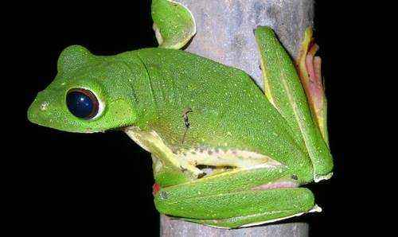
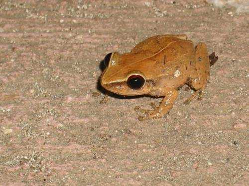
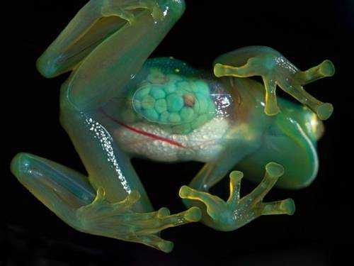

- Летающая лягушка

Эта маленькая лягушка установила рекорд по прыжкам в длину, которые скорее походят на перелеты. Обитающая во влажных тропиках Юго-Восточной Азии, она способна прыгнуть на целых 12 метров. Это является огромным расстоянием, если учесть, что размер самой лягушки составляет 10-12 сантиметров. Причина такой прыгучести кроется в широких, темно-оранжевых перепонках между пальцами на лапках лягушки, плоском теле и умении планировать.
- Ядовитая лягушка кокой

Миниатюрная представительница земноводных родом из джунглей Колумбии. Другое название этой лягушки, метко описывающее и внешность, и образ жизни, – пятнистый древолаз. Нехорошую славу снискала эта странная лягушка, благодаря необычайно токсичному яду, который в несколько тысяч раз сильнее, чем яд одной из самых опасных змей – гремучей. До сих пор ученые безуспешно пытаются отыскать к нему противоядие. Вырабатывается яд в коже лягушки, в специальных железах, и выделяется при касании к ней. Организм только одной лягушки способен выработать количество яда, способное убить полторы тысячи человек. Ну что тут скажешь, будьте осторожней в джунглях Колумбии!
- Прозрачная или стеклянная лягушка

Длина этой маленькой странной лягушки, найденной в мексиканском штате Чьапас, всего 2 см. Сквозь бесцветную кожу брюшка отчетливо видны все внутренности, именно поэтому ее еще называют стеклянной. Охотится этот вид земноводных ночью, поедая мелких насекомых. Прозрачная лягушка откладывает икру на листьях кустарников, нависающих над водой, чтобы вылупившиеся головастики сразу смогли попасть в родную для них стихию.